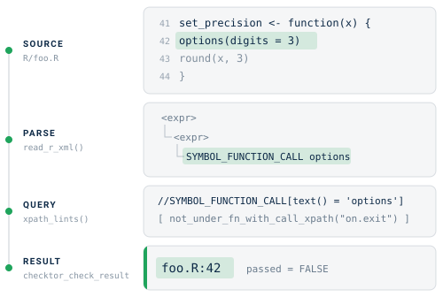
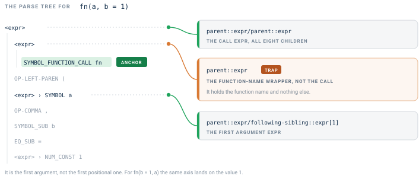
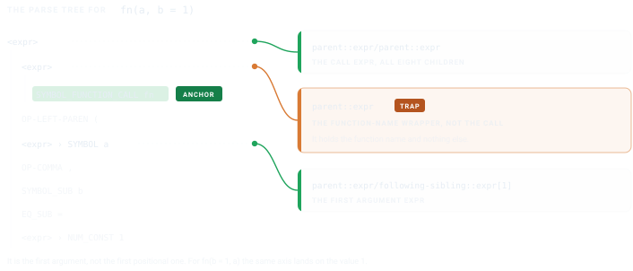
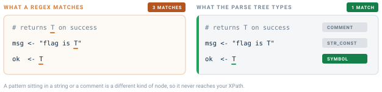
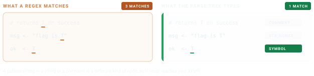

checktor knows CRAN’s rules, and your team still has rules of its own. Perhaps you have banned a function, insist on a file header or keep relapsing into a habit. The helpers in R/ast.R and R/rd.R let you write a check for such a rule in a few lines of XPath against the parsed syntax tree, and checktor() handles the bookkeeping.
Every check follows the same path. checktor parses your sources once into a syntax tree, and an XPath query picks out the nodes you object to. Each match comes back as a file:line string inside a result that knows how to print itself. The figure traces that path for a built-in check, the one that flags an options() call whose function never restores the setting.


Shape a check
Name a check lab_<name>(), where <name> is the name checktor() reports in tidy()$check and the name Config/checktor fields use. Keeping the two the same means a reader who sees a finding knows which function to call. The five category functions keep their own names, since each runs a whole panel rather than one check. Four are diagnose_<category>_issues(), and the policy panel is diagnose_policy_violations().
Checks built on the exported helpers follow this contract.
lab_<name> <- function(path, verbose = TRUE, parsed = NULL) {
if (is.null(parsed)) parsed <- read_r_xml(path)
if (length(parsed) == 0L) {
return(checktor_check_result(TRUE, character(0), "<message>"))
}
# ... XPath logic ...
checktor_check_result(passed, issues, "<message>")
}The
parsedargument takes an optional parse cache. Whenchecktor()runs the code checks together, it parses each file once and hands the result to every check that asks for it. On a 200-file package, that means 200 parses in all rather than 200 for every check.
Use the helpers
R/ast.R holds the shared machinery and R/rd.R the help-page walkers. The helpers below appear in roughly the order of the path above. read_r_xml() parses and xpath_lints() queries, and between them they do most of the work in every check that reads R/. The rest are shorthands for patterns common enough to earn a name. The first two are enough to write a check.
read_r_xml(path)
This is what makes your sources queryable. It parses every R/*.R file in the package and returns a named list of list(file, xml, error). Files that fail to parse keep their condition in error instead of stopping the run.
parsed <- read_r_xml(".")
str(parsed[[1]], max.level = 1)
#> List of 3
#> $ file : chr "./R/bar.R"
#> $ xml :List of 2
#> ..- attr(*, "class")= chr [1:2] "xml_document" "xml_node"
#> $ error: NULLThe xml slot is an xml2 document produced by xmlparsedata::xml_parse_data(). Every parse-tree token is an XML element with line1, col1, line2 and col2 attributes.
xpath_lints(parsed, xpath, label = NULL)
This is the workhorse. Give it an XPath query and it returns a "basename:line" string for every match in every file, ready for a check result’s $issues. The optional label appears in parentheses after each hit.
xpath_lints(parsed, "//SYMBOL_FUNCTION_CALL[text() = 'set.seed']")
#> [1] "bar.R:17" "foo.R:42"
undesirable_function_check(parsed, funs, label = TRUE)
The most common pattern, flagging any call to a given function, has a helper of its own.
undesirable_function_check(parsed, c("install.packages", "browser"))
#> [1] "foo.R:4 (install.packages())" "foo.R:5 (browser())"It is checktor’s counterpart to lintr’s undesirable_function_linter().
not_under_fn_with_call_xpath(funs)
It returns an XPath predicate that keeps only the nodes whose innermost enclosing function does not also call one of funs. option_changes uses it to require an on.exit() beside each options() call in the same function. The word innermost matters for nested functions, where an on.exit() in the outer function does not cover the inner one.
predicate <- not_under_fn_with_call_xpath(c("on.exit", "local_options"))
xpath <- paste0(
"//SYMBOL_FUNCTION_CALL[text() = 'options']",
"[", predicate, "]"
)
extract_rd_section(rd, tag) and collect_rd_text(node, skip)
These walk .Rd files by structure through tools::parse_Rd(), and both live in R/rd.R. If you read man/ yourself, you see every help page, including any that .Rbuildignore keeps out of the tarball. The built-in checks skip those pages, so skip them too if your check should judge only what CRAN receives.
rd <- tools::parse_Rd("man/my_fn.Rd")
ex <- extract_rd_section(rd, "\\examples")
collect_rd_text(ex, skip = "\\dontrun")Build a check for Sys.setenv()
Suppose you want to flag any Sys.setenv() call whose enclosing function does not also call on.exit(Sys.unsetenv(...)) or withr::local_envvar(). That is the same shape as lab_option_changes(), and checktor includes it as lab_sys_setenv(). Its core looks like this.
lab_sys_setenv <- function(path, verbose = TRUE, parsed = NULL) {
# reuse the parse-cache when checktor() supplies one, else parse fresh
if (is.null(parsed)) parsed <- read_r_xml(path)
if (length(parsed) == 0L) {
return(checktor_check_result(TRUE, character(0),
"Sys.setenv reset check"))
}
xpath <- paste0(
"//SYMBOL_FUNCTION_CALL[text() = 'Sys.setenv'][",
# keep only calls whose enclosing function never resets the variable
" ", not_under_fn_with_call_xpath(c(
"on.exit",
"Sys.unsetenv",
"local_envvar", "with_envvar"
)),
"]"
)
issues <- xpath_lints(parsed, xpath)
passed <- length(issues) == 0L
# a built-in check also calls emit_issue_summary(issues, verbose, ...) here
# to print the cli summary when verbose = TRUE
checktor_check_result(passed, issues, "Sys.setenv reset check")
}It runs to about twenty lines, and the XPath predicate is the only interesting one. The rest is bookkeeping every check shares. The built-in version adds one refinement. It exempts a setter that captures the old value and hands it back (old <- get_env(); Sys.setenv(...); invisible(old)), since the caller can then restore it and nothing leaks. Refinements like that are where a real check earns its keep, but the skeleton is this one.
Navigate the parse tree
fn(a, b = 1) parses to this tree.
<expr> <!-- call expr -->
<expr> <!-- function-name expr -->
<SYMBOL_FUNCTION_CALL>fn</SYMBOL_FUNCTION_CALL>
</expr>
<OP-LEFT-PAREN>(
<expr><SYMBOL>a</SYMBOL></expr> <!-- first positional arg -->
<OP-COMMA>,
<SYMBOL_SUB>b</SYMBOL_SUB> <!-- named-arg name -->
<EQ_SUB>=</EQ_SUB>
<expr><NUM_CONST>1</NUM_CONST></expr> <!-- named-arg value -->
<OP-RIGHT-PAREN>)
</expr>Anchor on the SYMBOL_FUNCTION_CALL and every other node is one axis away. The amber card in the figure marks the axis that catches people out.


- the call expr is
parent::expr/parent::expr - the first argument expr is
parent::expr/following-sibling::expr[1] - a named argument’s name is
parent::expr/parent::expr/SYMBOL_SUB
The middle axis finds the first argument, which is not always the first positional argument. For fn(b = 1, a) it lands on the value 1, so use it only when you already know the shape of the call.
Try a query
Two calls are enough to try a query on your own package.
# Parse a file
parsed <- read_r_xml("path/to/package")
# Find every call to install.packages()
xpath_lints(parsed,
"//SYMBOL_FUNCTION_CALL[text() = 'install.packages']")Register the check
Your finished lab_*() function does nothing until checktor() knows to call it. register_check() connects the two at run time, without editing checktor’s source.
lab_my_check <- function(path, verbose = TRUE, parsed = NULL) {
if (is.null(parsed)) parsed <- read_r_xml(path)
issues <- undesirable_function_check(parsed, "banned")
checktor_check_result(length(issues) == 0L, issues, "no banned()")
}
register_check("my_check", lab_my_check,
category = "code", severity = "policy")From then on, every checktor() run includes my_check. It appears under that name in issues(), tidy() and the printed report, and the severity you gave it decides whether it counts toward overall health.
Registered checks work under a few rules.
- The function returns a
checktor_check_result(), the same shape as every built-in check, sorun_checks()can catch its errors and keep its$passedrecord. - checktor calls it as
fn(path, verbose). If the function also declaresparsed(forcodeandpolicychecks) ordesc(fordescriptionchecks), it receives the shared cache and reuses the one parse instead of reading the sources again. -
categoryis one ofcode,description,documentation,generalorpolicy. The check runs after that category’s built-in checks. -
severityispolicy,robustnessoropinion, and defaults torobustness. It decides whether a finding counts against overall health underchecktor()’sseverityargument. - Checks that cannot run where they are should report a skip, not a pass. They might need a network, a program or a credential that is missing. Return
checktor_check_result(TRUE, character(0), "<message>", skipped = TRUE, skip_reason = "<why>"). It then shows as skipped intidy(),summary(), the printed report,health_report()andci_report(). -
options(checktor.disable = "my_check")orConfig/checktor/disableturns a registered check off, as it does a built-in one. -
prescribe()has no treatment for a registered check, so it lists the findings without a remedy.
registered_checks() lists what is registered, and unregister_check("my_check") removes one. Called with no argument, unregister_check() removes them all. The registry lasts for the session, so call register_check() somewhere that runs before you need the check, such as a project .Rprofile, your own package’s .onLoad() or the top of a CI script.
The helpers on this page are all exported, so a registered check can use the same ones the built-in checks use. They are read_r_xml(), xpath_lints(), xpath_per_file(), undesirable_function_check(), not_under_fn_with_call_xpath() and the .Rd walkers extract_rd_section() and collect_rd_text().
To contribute a check to checktor itself, skip the registry and add it the way the built-in checks are added.
- Write
lab_my_check()in the matchingR/diagnostics-*.Rfile.- Add a
check_row()for it toBUILTIN_CHECKSinR/registry.R. The row gives the category, the severity, the label its result reports as$messageand when it runs. Setreads_desc = TRUEfor a check that reads the parsedDESCRIPTION, so it is reported as skipped under its label when R cannot read the file.- Add its remedy to
R/treatments.R, whichprescribe()andhealth_report()print.- Add a
*_badscenario underinst/diagnose/for its example, and a row to Where the Checks Come From.The category function runs its rows in table order and passes
parsedordescto a check whose signature takes it. Checks that should not run every time setwhenin their row. Useconsoleorbackendfor a check that needs the network or an external program, and have it returnchecktor_skipped_result()when it cannot run. Userequestfor a check that should run only when called, which keeps it out of every run.test-severity.Rholds the table, and the vignette’s copy of it, to what runs.
Configure an existing check
Some house rules need no new check, because a package can configure checktor from Config/checktor/* fields in its own DESCRIPTION. Each field is a comma-separated list. DESCRIPTION has no comment syntax, so keep notes out of the field, or anything after the last name becomes part of it.
Config/checktor/software_names: brms, cmdstanr
Config/checktor/acronyms: MCMC, GLMM
Config/checktor/allow: urls:README.md
Config/checktor/disable: news_filesoftware_names adds names to flag when they appear unquoted, and acronyms adds domain acronyms to accept without explanation. Each extends the word list its check already uses, and language_names and format_names work the same way. allow mutes findings, either a whole check or a check:substring, which a green checkup() gate needs once someone has reviewed and accepted a finding. disable turns a check off, so it does not run and is not counted. To turn a check off in every package rather than one, set options(checktor.disable = "news_file") once, for example in .Rprofile. checktor combines the option with the field.
Write a check of your own when the rule is yours alone. Use Config/checktor/* when you only need to teach or quiet a check checktor already has.
Trust the parse tree
Working on the parse tree is what keeps checktor’s checks precise. Patterns inside a string literal or a comment are a different kind of node from a real call, so a query for the call never matches them.


Write the XPath and let checktor carry the rest. Your house rule then gets the same reports and the same Config/checktor controls as the built-in checks.
See also
- Getting Started with checktor: checktor from a user’s side, from a first checkup to a written report.
-
checktor in Continuous Integration: run
checkup()as a build gate. -
?xmlparsedata::xml_parse_data, and the lintr guide to writing linters, which covers the same patterns at a larger scale.